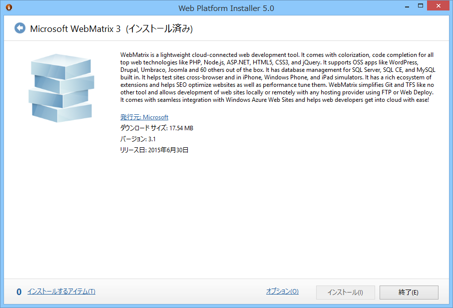
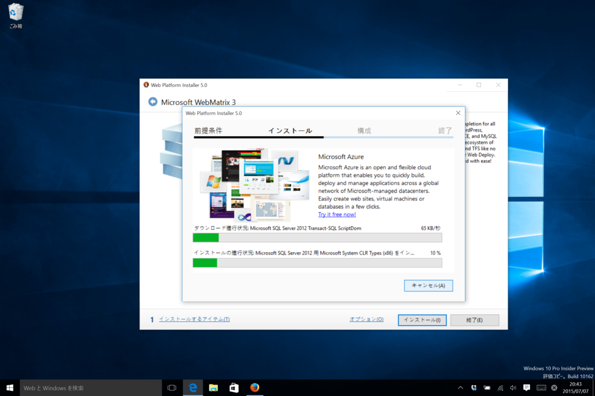
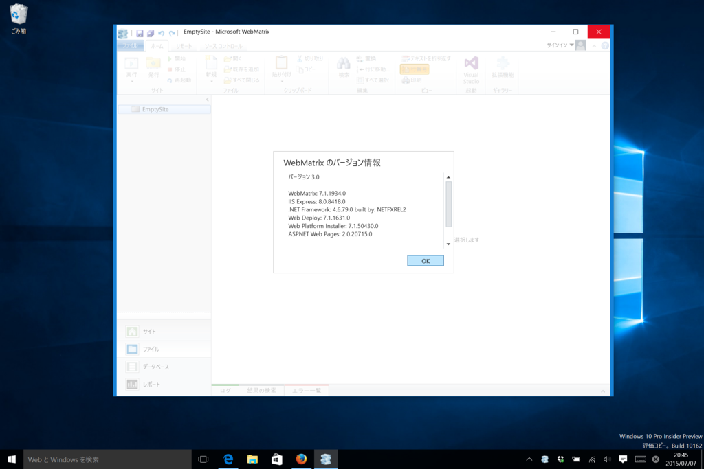
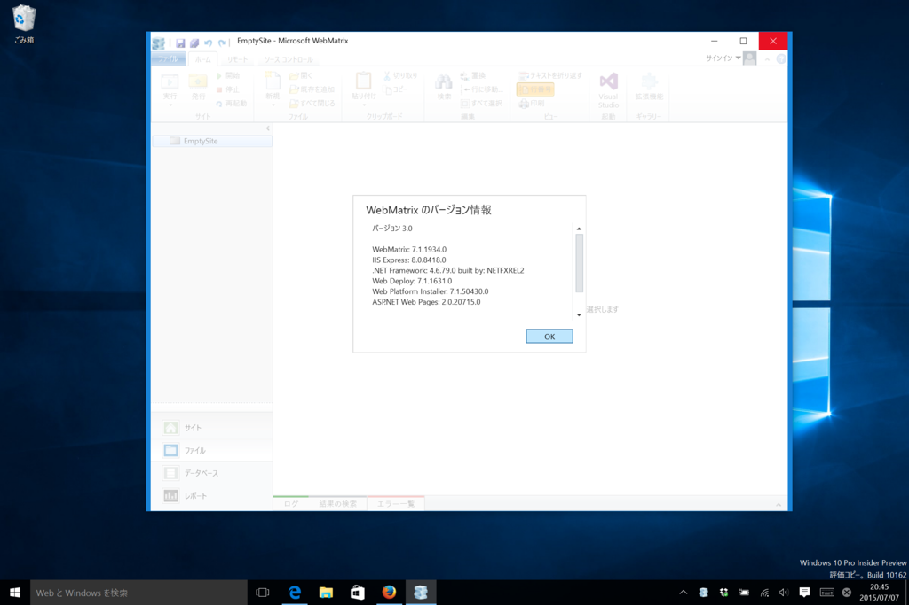

お前ら喜べ！ Windows 10 でも WebMatrix が使えるぞ！！
公開日：

@shibayan からもたらされた極秘情報によると、6月30日に WebMatrix 3.1 がリリースされていたらしい。
@daruyanagi インスコ済みの WebMatrix のバージョン教えて
— しばやん (@shibayan) 2015年7月5日
@daruyanagi 6/30 にアップデートされてたくさい
— しばやん (@shibayan) 2015年7月5日
変更点が相変わらずよくわからなかったので、その日はそのまま寝て、このこともすっかり忘れていたのだけど、ふと思い立って Windows 10 にインストールしてみたところ……

 

ｷﾀ━(ﾟ∀ﾟ)━(∀ﾟ )━(ﾟ )━( )━( )━( ﾟ)━( ﾟ∀)━(ﾟ∀ﾟ)━!!
ちょっと端っこが欠けてるような気がするけど、きっと気にしたら負けだ！！ ちゃんと息をしてくれているだけで、おじさんは満足です。これでいちいちわざわざゴニャゴニャしなくても、Windows 10 でちゃんと WebMatrix がインストールできる！
みんな大好き Visual Basic 6 ともども、Windows 10 でも WebMatrix をよろしくお願いいたします（＾ｖ＾）ﾉ
おまけ

もしお手すきでしたらこれも直していただければ幸いです(`・ω・́)ゝ